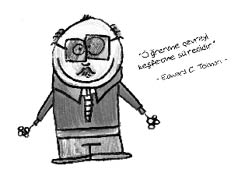
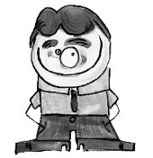
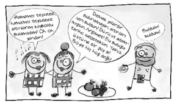
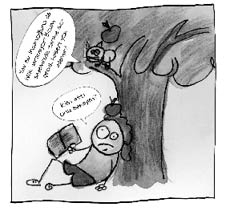

Edward Chace Tolman (1886-1959)
Amerikalı psikolog. İyi halli bir ailenin çocuğudur. Önce elektrokimya okumuş, sonraları William James’in yazılarını okuyup felsefeci olmaya karar vermiştir. Felsefe ve psikoloji dersleri almış, felsefe için yeterince zeki olmadığını düşünerek psikolojide karar kılmıştır.

Tolman, “geriye dönük ket vurma” üzerine, “öğrenme” ve “motivasyon” alanlarında önemli çalışmalar yapmıştır. Ona göre öğrenme dışarıdan ödül gerektirmez. Öğrenme ödüle değil amaca bağlıdır. Bu nedenle yaklaşımı, davranışçılık ile geştaltı birleştiren kendine has bir davranışçılıktır: “Amaçlı davranışçılık.”
Neymiş gizil öğrenme…
Tolman ve Honzik yaptıkları bir deneyde, bir grup fareyi sonunda peynir olan karışık bir labirente koyarlar. Fareler bir o yola girerler, olmaz; diğer yola girerler, olmaz… Bunun üzerine yeter artık, iki lokma peynir için çektiğimiz eziyete bak arkadaş diyerek vaz mı geçerler? Asla! Ve bir şekilde yiyeceğe ulaşırlar. On gün boyunca devam eden bu işlemde, koşunun hızı çabucak artar ve hataların sayısı da azalır.
Farelerden oluşan ikinci bir grup için ilerleyecekleri labirente herhangi bir yiyecek yerleştirilmez. Labirentte her gün zaman harcadıktan sonra, bu gruptaki fareler labirenti dolaşmışlar, “Lan o kadar eziyet çekiyoz, insan bir parça olsun peynir koymaz mı!” deyip söylene söylene kafeslerine geri dönmüşlerdir. Bu grubun koşu hızında ve hata sayısında herhangi bir gelişme görülmemiştir. Yani ödüllendirilen grupta öğrenme gerçekleşmiş, ödüllendirilmeyen grupta ise öğrenme gerçekleşmemiş midir?
İkinci gruptaki farelerin gücendiğini fark eden Tolman ve Honzik, daha önce ödüllendirilmeyen bu ikinci gruptaki fareler için labirentteki ödül kutusuna yiyecek bırakmışlardır. Bunun üzerine bizim fareler “Hah şöyle akıllı olun!” diyerek hızlarında ve hata sayılarında hızlı bir değişme göstermişlerdir. Çünkü ödüllendirilmemiş denemeler esnasında, Tolman’a fark ettirmeden hatta kendileri bile fark etmeden yani gizil öğrenmişlerdir.
Tolman, farelerin mekânsal ilişkileri öğrendiklerini ve hatta labirentin bilişsel haritasını geliştirdiklerini, ödülün ise sadece motivasyonu etkilediğini belirtmiştir. Örneğin boş zamanlarında otobüs terminalinde dolaşmayı seven bir kişi fark etmeden yazıhanelerin yerini öğrenir ve bir gün iş gereği bir yere gitmesi gerektiğinde, o yere giden otobüs yazıhanesini hemen bulabilir gibi…
Wolfgang Köhler (1887-1967)
Alman-Amerikalı psikolog. Geştalt psikolojisinin temellerini atanlar arasında yer alır. Fakat Koffka ve Wertheimer’den farklı olarak Köhler, hayvanlar üzerinde araştırmalarda yoğunlaşmıştır. Öğrenme ve algıyı hayvanlar üzerinde uygulayarak birçok keşifte bulunan Köhler, aynı zamanda sanatsal bir kişilik olup klasik müzik ve piyanodan da hoşlanırdı.

Kitapları: Geştalt Psikolojisi, Dünya Gerçekleri Arasında Değerin Yeri, Psikolojinin Dinamikleri
Neymiş kavrayış yoluyla öğrenme…
Bir sorunun çözümünü birdenbire sezgi ile kavrarız. Buna kavrayış yoluyla öğrenme ya da sezgisel öğrenme denir. Kavrayış yoluyla öğrenmede olaylar arasında ilişki kurabilmek, deneyimler ve zekâ önemli rol oynar. Örneğin Newton’un kafasına elma düşünce yerçekimi kanununu bulması ya da Arşimet’in hamamda yıkanırken su tasının su yüzeyine çıkması sonucu suyun kaldırma kuvvetini bulması ve bunun üzerine “Evraka!” yani “Buldum!” diyerek dışarı çıkması -ki bu olayı gören hamamcının psikolojisinin tedavi edilmez bir yara alması söz konusudur- kavrayış yoluyla öğrenmeye örnektir.
Ya da…

Gibi…

Wolfgang Köhler şempanzelerde kavrayış yoluyla öğrenmenin mümkün olup olmadığını araştırmıştır. Köhler, geniş bir kafes içine “Sultan” adındaki şempanzeyi koymuş ve yetişemeyeceği bir yüksekliğe muz asmıştır. Kafeste üç kutu bulunmaktadır. Sultan önce muza ulaşmaya çalışır, fakat ulaşamaz. Kafesi inceler, gezer, etrafına bakınır. Sonra aniden kutuları üst üste koyar ve muza ulaşır. Sultan içinde bulunduğu durumdaki ilişkileri ansızın, birdenbire kavramıştır. Bu çalışmalar üzerine Köhler, geştalt teorisinin hayvanlara uygulanabileceğini ispatlayarak Maymunların Zihniyeti adlı eserini yayınlamıştır.
Köhler’in en meşhur deneylerinden biri de tavuklar üzerinde yaptığı deneydir.
Köhler tavukları açık ve koyu renkli iki sayfanın üzerindeki arpaları gagalamaları konusunda eğitmiştir. Açık renkli sayfaları tercih etmeleri konusunda eğitilen tavuklar kendilerine daha açık renkli sayfa sunulduğunda büyük çoğunluğu daha açık renkli sayfayı tercih etmiştir. Aynı şekilde daha koyu renkleri tercih etmesi konusunda eğitilmiş tavuklar da daha koyu renkliyi tercih etmiştir. Köhler elde ettiği bu verilerle tavukların öğrendikleri şeyler arasında ilişki kurdukları sonucuna varmıştır.